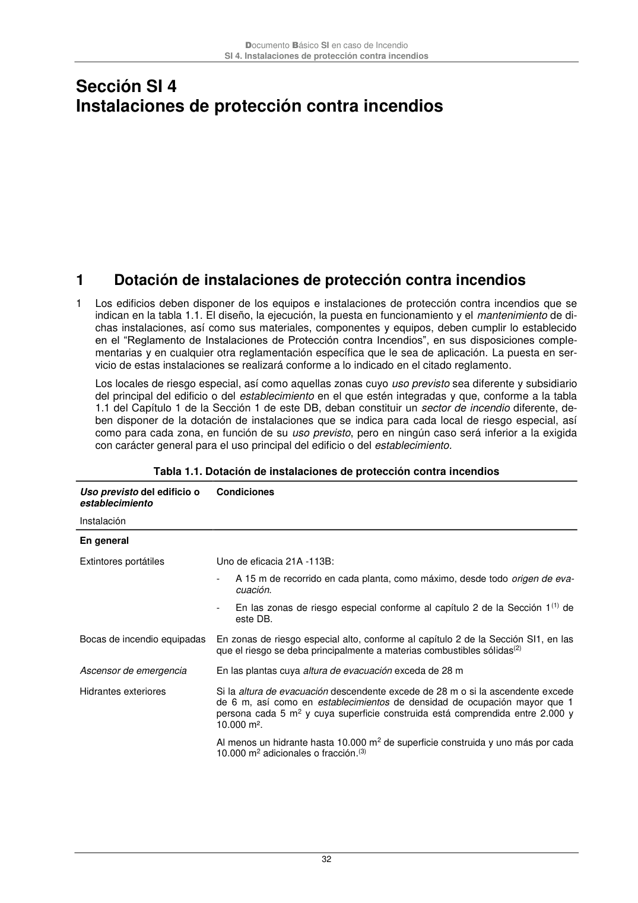

DB-SI Seguridad en caso de incendio · edición 2025-03-04 · capa oficial
Documento DB-SI-oficial · SHA-256 del PDF 0a2e78cd62471d9cc5cfe2efbc6aa39fdbad73c124aea7b039f9de96c141e105
Página física 32 de 92.
Copia fiel del PDF fuente · Fuente oficial
Ficha de la disposición en la fuente oficial
Formato: Texto de la página (Markdown)
Documento Básico SI en caso de Incendio SI 4. Instalaciones de protección contra incendios 32 Sección SI 4 Instalaciones de protección contra incendios 1 Dotación de instalaciones de protección contra incendios 1 Los edificios deben disponer de los equipos e instalaciones de protección contra incendios que se indican en la tabla 1.1. El diseño, la ejecución, la puesta en funcionamiento y el mantenimiento de di- chas instalaciones, así como sus materiales, componentes y equipos, deben cumplir lo establecido en el “Reglamento de Instalaciones de Protección contra Incendios”, en sus disposiciones comple- mentarias y en cualquier otra reglamentación específica que le sea de aplicación. La puesta en ser- vicio de estas instalaciones se realizará conforme a lo indicado en el citado reglamento. Los locales de riesgo especial, así como aquellas zonas cuyo uso previsto sea diferente y subsidiario del principal del edificio o del establecimiento en el que estén integradas y que, conforme a la tabla 1.1 del Capítulo 1 de la Sección 1 de este DB, deban constituir un sector de incendio diferente, de- ben disponer de la dotación de instalaciones que se indica para cada local de riesgo especial, así como para cada zona, en función de su uso previsto, pero en ningún caso será inferior a la exigida con carácter general para el uso principal del edificio o del establecimiento. Tabla 1.1. Dotación de instalaciones de protección contra incendios Uso previsto del edificio o establecimiento Instalación Condiciones En general Extintores portátiles Uno de eficacia 21A -113B: - A 15 m de recorrido en cada planta, como máximo, desde todo origen de eva- cuación. - En las zonas de riesgo especial conforme al capítulo 2 de la Sección 1(1) de este DB. Bocas de incendio equipadas En zonas de riesgo especial alto, conforme al capítulo 2 de la Sección SI1, en las que el riesgo se deba principalmente a materias combustibles sólidas(2) Ascensor de emergencia En las plantas cuya altura de evacuación exceda de 28 m Hidrantes exteriores Si la altura de evacuación descendente excede de 28 m o si la ascendente excede de 6 m, así como en establecimientos de densidad de ocupación mayor que 1 persona cada 5 m2 y cuya superficie construida está comprendida entre 2.000 y 10.000 m². Al menos un hidrante hasta 10.000 m2 de superficie construida y uno más por cada 10.000 m2 adicionales o fracción.(3)
